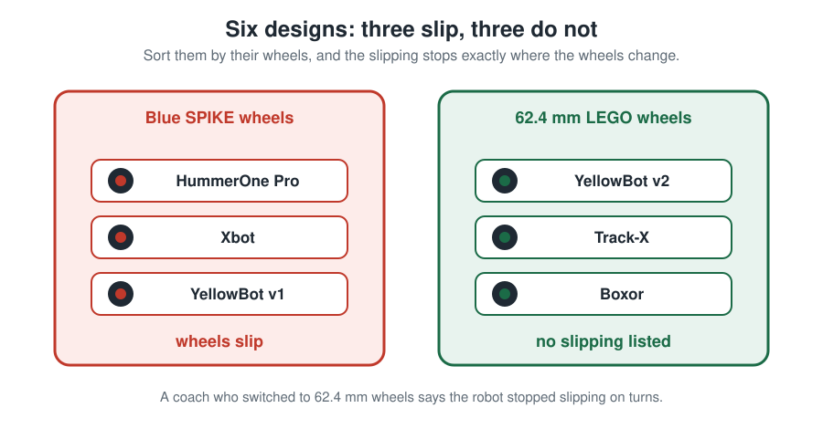
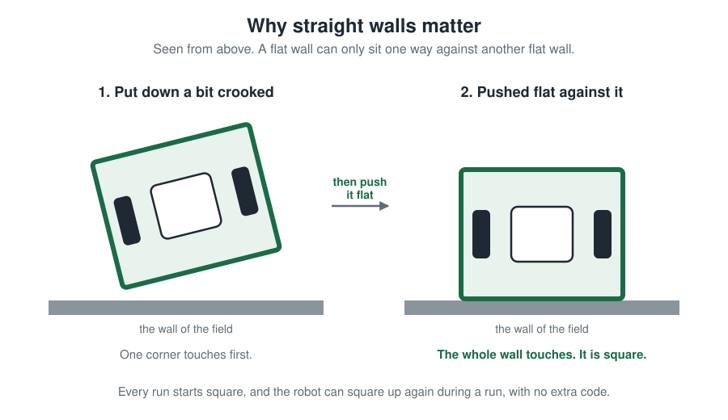
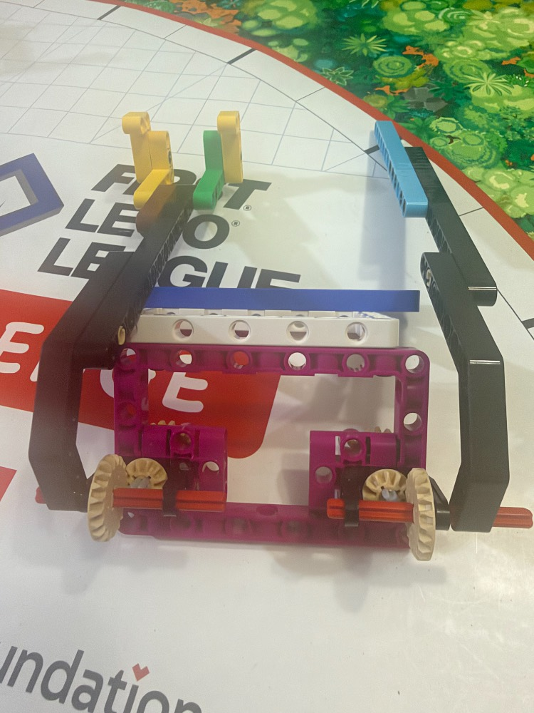
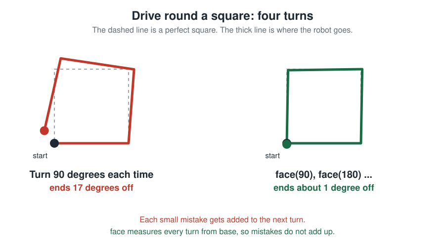
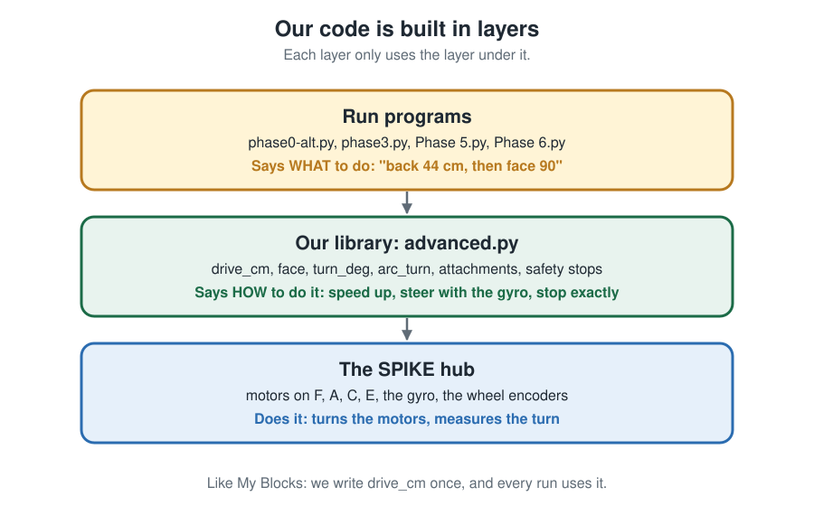

One base. Attachments that drop on. A gyro that keeps it straight.
This is our robot, how we chose its design, how the code works, and what we
changed after testing. Each of us explains one part, and you can ask
any of us about any part.
The robot that scores is not the cleverest one. It is the one that does the same thing every time.
IDENTIFY · Building resources
We studied six designs before we built ours
We compared six driving bases other teams had built and tested, and what went
wrong for each. Sorted by their wheels, a pattern showed up:
the three that slipped all used the blue SPIKE wheels.

We took the good ideas from all six: a box frame, wheels held on both sides, gravity mounting, and the gyro doing the driving.
IDENTIFY · Mission strategy
Our runs, and why these missions
FIRST's advice: pick missions that need simple moves like
push, pull or lift, that are close to base, and that are
easy to get home from.
Program
Missions
phase0-alt.py
M03 Flip the Rock, then M02 Exploding Seeds
phase3.py
M05 Reaching Roots, then across to the right side
Phase 5.py
Four jobs in one run: "Pull", "open door", "ant" and "Tree support" [Team to fill in: mission numbers]
Phase 6.py
M13 Keystone Species
Team to fill in
A mission we skipped, and why, with numbers. For example: "M__ was only __ points and took __ seconds."
CREATE · The driving base
A box with flat walls, and the wheels inside

Every run starts square.Push a flat wall against the field wall and it can only sit one way. No measuring.
It squares up during a run too.The robot backs gently into a wall or a model to straighten up.
The frame touches things, not the wheels.A wheel rubbing on a model would steer the robot off course.
Each wheel is held on both sides.Motor on one side, frame on the other, so a heavy attachment cannot bend it inwards.
CREATE · Attachments
The BOXOR frame, mounted by gravity

The BOXOR frame. The tan bevel gears turn the motor's movement through 90 degrees to swing an arm.
Pegs line it up.It can only go on the right way.
Its own weight holds it.No pins to forget at the table.
Team to fill in
What we changed from the BOXOR design: ____. A swap takes __ seconds.
CREATE · Code and sensors
Every turn is measured from where we started

face(90) turns until the robot points 90 degrees from base.
A small mistake in one turn is not passed on to the next.
Time
How far off
Old turn (counting wheels)
1.54 s
4.26°
Gyro turn
1.18 s
0.58°
Faster and more accurate, so we deleted the old turn.
CREATE · Code and sensors
Code in layers, and two things at once

Run programs say what. Our library says how. Improve the library once and every run gets better.
At the end of the M02 run, the arm finishes lifting while the robot drives home: